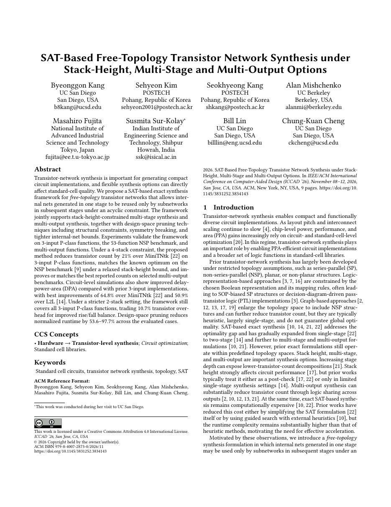

Abstract
Transistor-network synthesis is important for generating compact circuit implementations, and flexible synthesis options can directly affect standard-cell quality.
We propose a SAT-based exact synthesis framework for free-topology transistor networks that allows internal nets generated in one stage to be reused only by subnetworks in subsequent stages under an acyclic constraint. The framework jointly supports stack-height-constrained multi-stage synthesis and multi-output synthesis, together with design-space pruning techniques including structural constraints, symmetry breaking, and tighter internal-net bounds.
Experiments validate the framework on 3-input P-class functions, the 53-function NSP benchmark, and multi-output functions. Under a 4-stack constraint, the proposed method reduces transistor count by 21% over MiniTNtk [22] on 3-input P-class functions, matches the known optimum on the NSP benchmark [9] under a relaxed stack-height bound, and improves or matches the best reported counts on selected multi-output benchmarks. Circuit-level simulations also show improved delay-power-area (DPA) compared with prior 3-input implementations, with best improvements of 64.8% over MiniTNtk [22] and 50.9% over L2L [14]. Under a stricter 2-stack setting, the framework still covers all 3-input P-class functions, trading 10.7% transistor overhead for improved rise/fall balance. Design-space pruning reduces normalized runtime by 53.6–97.7% across the evaluated cases.
Released Artifacts
- HSPICE input decksGenerated simulation decks for the released cells.
- Transistor-level SPICE cellsGenerated 2-stack and 4-stack cell implementations.
- NSP 4-stack resultsSolver logs for the selected NSP benchmark cases.
- Multi-output resultsSynthesis logs for the released multi-output benchmarks.
- Comparison artifactsGenerated MiniTNtk and L2L comparison decks and cells.
Paper
The camera-ready paper is available as a nine-page PDF. The archival publication is identified by DOI 10.1145/3831252.3834143.
Open PDF
Citation
@inproceedings{kang2026sattns,
author = {Byeonggon Kang and Sehyeon Kim and Seokhyeong Kang and Alan Mishchenko and Masahiro Fujita and Susmita Sur-Kolay and Bill Lin and Chung-Kuan Cheng},
title = {{SAT}-Based Free-Topology Transistor Network Synthesis under Stack-Height, Multi-Stage and Multi-Output Options},
booktitle = {Proceedings of the IEEE/ACM International Conference on Computer-Aided Design (ICCAD)},
year = {2026},
doi = {10.1145/3831252.3834143}
}